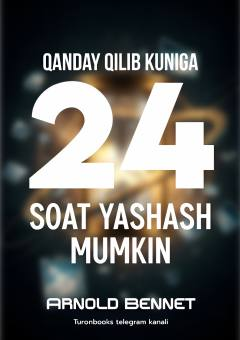

QQVaqtingizni samarali boshqarish va hayotingizni mazmunli o'tkazish bo'yicha amaliy qo'llanma.
Ushbu kitob insonlarga o'z vaqtini samarali taqsimlash va har bir kunni mazmunli o'tkazish bo'yicha amaliy maslahatlar beradi. Muallif vaqtni hayotning eng qimmatli resursi sifatida ta'riflab, uni to'g'ri boshqarish orqali qanday qilib muvaffaqiyatga erishish mumkinligini tushuntiradi.